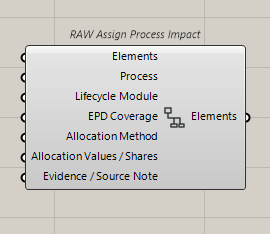
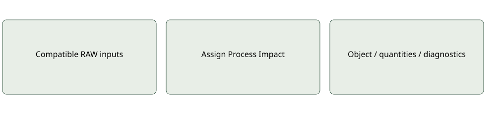

Impact
RAW Assign Process Impact
Allocates evaluated events into element ledgers with duplicate, overlap, boundary and context checks.
Inputs: Elements; Process; Lifecycle Module; EPD Coverage; Allocation Method; Allocation Values / Shares; Evidence / Source Note
Outputs: Elements
Assignment is not automatic approval; uncertain contributions remain pending.Use and limitations
Optional and mode-specific ports may remain serialized when hidden. Inspect quantities, source provenance and coverage before interpreting results. A missing input is not an inferred zero.